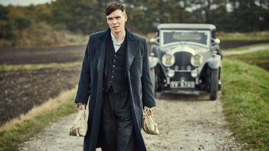

- Оригинальное название: Peaky Blinders
- Страна: Великобритания
- Год: 2013
- Жанр: Драма, Криминал
- Режиссер: Колм МакКарти, Tim Mielants, Отто Баферст
- Продолжительность: 60 минут
Кадры из сериала:
Описание:
После войны в Британии было непросто. Возрастающая преступность и проблемы общества были слишком явными. Исключением не стал и Бирмингем, где жители переживали нищету и высокий уровень криминала. Кажется, спасения от этого нет никакого. Ранее в городе находилась промышленность, но после Первой мировой ничего не осталось. Именно тогда случились самые заметные изменения в структуре группировок. Тогда к власти стала семья Шелби. Братья, каждый из которых обладал немалыми амбициями, и готовые идти на любые ухищрения, дабы достигнуть своей цели.Банду не зря назвали Острые козырьки. Дело в том, что они вшивали лезвия в головные уборы, и это их отличало от остальных. Главой банды был Томми, которому не каждый решался переходить дорогу. Таких смельчаков в Бирмингеме было очень немного. Впрочем, за все нужно платить. Сложно не захватить власть, а удержать ее, ведь всегда найдутся те, кто попробует свергнуть короля преступности города, при этом точно так же не гнушаясь грязных методов. Шелби переживают не лучшие свои времена, но они готовы сражаться за созданную криминальную империю до самого конца. Неважно, чем придется расплачиваться, и сколько времени это будет длиться. Победитель здесь только один.